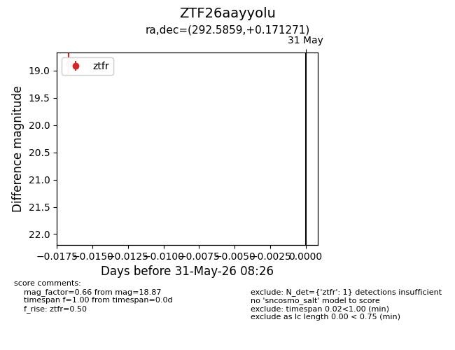
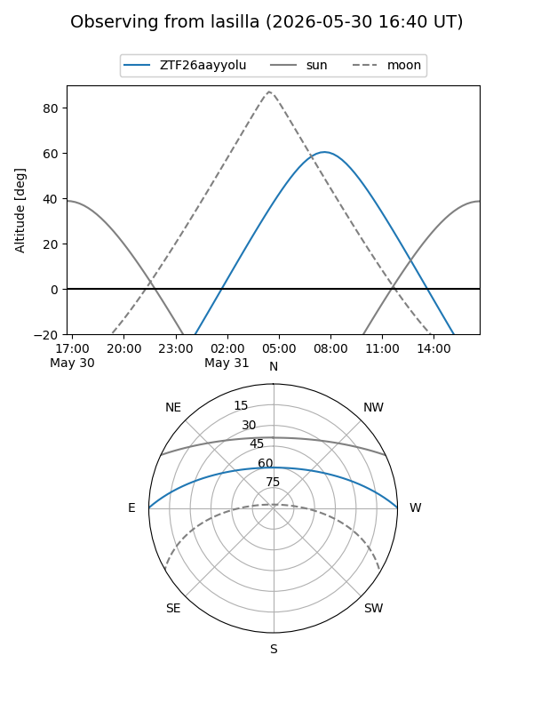
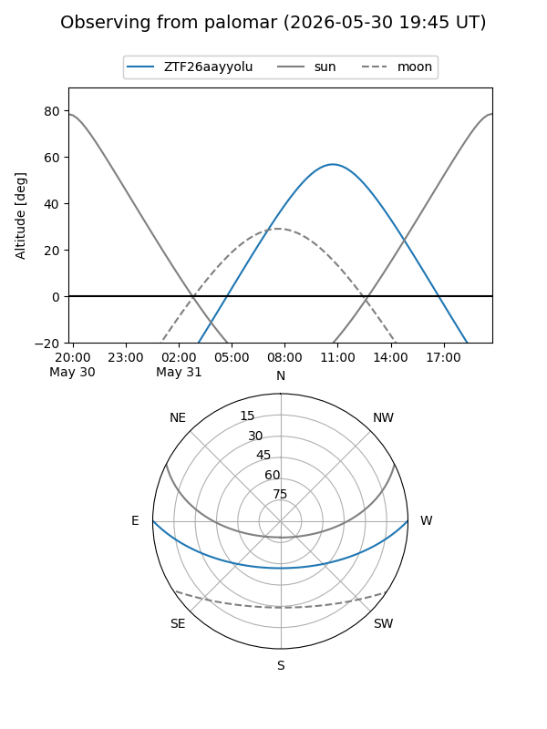

ZTF26aayyolu
Target ZTF26aayyolu at 2026-05-31 08:28
Aliases and brokers:
lsst-FINK: link
lsst-Lasair: link
lsst-ALeRCE: link
ztf-FINK: link
ztf-Lasair: link
ztf-ALeRCE: link
alt names
ZTF26aayyolu (ztf,fink_ztf)
Coordinates:
equatorial (ra, dec) = 292.5859,+0.17127
equatorial (HMS+DMS) = 19:30:20.62,+00:10:16.57
galactic (l, b) = (37.5547,-8.56865)
Flags:
Photometry:
last ztfr=18.87
1 ztfr detections
Lightcurve

Visibility


Additional plots